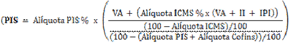

Calculo NFe Importação |
  
|
Calculo NFe Importação |
|
EMISSÃO DE NOTA FISCAL DE ENTRADA DE IMPORTAÇÃO:
1. O valor das mercadorias será compreendido pela soma de: CIF + Impostos de Importação.
2 - O Valor Total da NF será o somatório de:
2.1 - Valor das mercadorias;
2.2 – ICMS, se houver;
2.3 – IPI, se alíquota positiva;
2.4 - PIS - importação;
2.5 - COFINS - importação;
2.6 – Despesas (Demais gastos que incorreram no processo de importação).
Importante:
●O PIS e a COFINS da importação, por não possuírem campo específico na NF, devem ter seus valores descritos no campo de "Informações Complementares", ou mesmo no próprio corpo da NF;
●Sabemos que todos os campos da nota fiscal devem ser preenchidos e existe um campo específico para informação das despesas de importação (Outras Despesas Acessórias), conforme consta no artigo 19, incido IV, alínea "h" do Convênio S/Nº de 1970.
Vale lembrar que tais despesas serão registradas como custo para cálculo da nota fiscal de saída e registradas na contabilidade.
MEMÓRIA DE CÁLCULO DOS IMPOSTOS NA IMPORTAÇÃO
1. IMPOSTO DE IMPORTAÇÃO - deve ser indicado na nota fiscal, pois compõe o custo de importação;
Como Calcular:
Valor FOB + Frete + Seguro (Valor CIF) + Adicional = Base de cálculo
Base de cálculo x Alíquota = Valor do Imposto de Importação
2. IPI NACIONALIZAÇÃO - deve destacar o IPI no campo próprio, mesmo que pretenda apenas comercializar o produto;
Como Calcular:
Valor FOB + Frete + Seguro (Valor CIF) + II (Imposto de Importação) = Base de cálculo
Base de cálculo x Alíquota = Valor do IPI
3. PIS/COFINS NACIONALIZAÇÃO -devem ser indicados na NF, pois compõem o custo da mercadoria;
Como Calcular:
A base de cálculo da Contribuição para o PIS/Pasep - Importação e da Cofins - Importação é: o valor aduaneiro, assim entendido o valor que servir ou que serviria de base para o cálculo do imposto de importação, acrescido do valor do ICMS incidente no desembaraço aduaneiro e do valor das próprias contribuições, na incidência sobre a importação de bens.
FÓRMULA - IN SRF nº 572:

3. ICMS NACIONALIZAÇÃO -deve também, ser destacado no campo próprio da operação, contudo, como na importação esse valor não está dentro do valor aduaneiro, é recomendado que ele seja colocado no campo de "Outras Despesas Acessórias".
BASE DE CÁLCULO DO ICMS NA IMPORTAÇÃO
CORRESPONDE:
1- o valor da mercadoria constante na DI, convertido em moeda nacional pela mesma taxa de câmbio utilizada no cálculo do II (art. 64 do RICMS/ES);
2- Imposto de Importação;
3- IPI;
4- Imposto sobre Operações de Câmbio;
5- quaisquer outros impostos, taxas, contribuições e despesas aduaneiras;
6- o montante do próprio imposto;
7- o valor correspondente a:
a) seguros, juros e demais importâncias pagas, recebidas ou debitadas, bem como descontos concedidos sob condição; e
b) frete, caso o transporte seja efetuado pelo próprio remetente ou por sua conta e ordem e seja cobrado em separado.
EXEMPLO PRÁTICO:
1- Valor CIF em reais: R$ 1.000,00
2- Valor do II - 10%: R$ 100,00
3- Valor do IPI - 15%: R$ 165,00
4- Valor de outros impostos (PIS/COFINS): R$ 128,34
5- Despesas aduaneiras (TX de SISCOMEX): R$ 40,00
6- SUBTOTAL: R$ 1.433,34
7- Alíquota do ICMS na importação: 17%
8- Fator (100% - 17%): 83,00%
9 - Base de cálculo=item 6 divido pelo item 8: R$ 1.726,92
10- VALOR DO ICMS (item 09 multiplicado pelo item 07): R$ 293,58
Outras Informações importantes:
1 - Simples ou não simples, a emissão de NF de Importação (CFOP 3102) será tributada integralmente, tendo o lançamento do ICMS por dentro, PIS, COFINS, IPI e II integrais no cálculo conforme alíquotas com base na TEC. A diferença se dará na saída da mercadoria por venda.
2 - Na DI - Declaração de Importação todos os tributos serão lançados e devem ser utilizados para emissão da NF. O seu despachante aduaneiro é responsável pela emissão deste documento.
3 - Para fins de cálculo a única tarifa a ser incluída na base de cálculo do I.I é a taxa SISCOMEX (algo entre 40 e 60 reais)
4 - PIS e COFINS DEVEM aparecer em Informações Adicionais na NFe, assim como deve ser lançada no corpo da Nota em notas manuais.
5 - Para se ter crédito de ICMS é necessário estar no LUCRO PRESUMIDO ou REAL
6 - O código do PIS e COFINS na saída será de acordo com o CFOP da Saída, bem como o produto e sua alíquota.